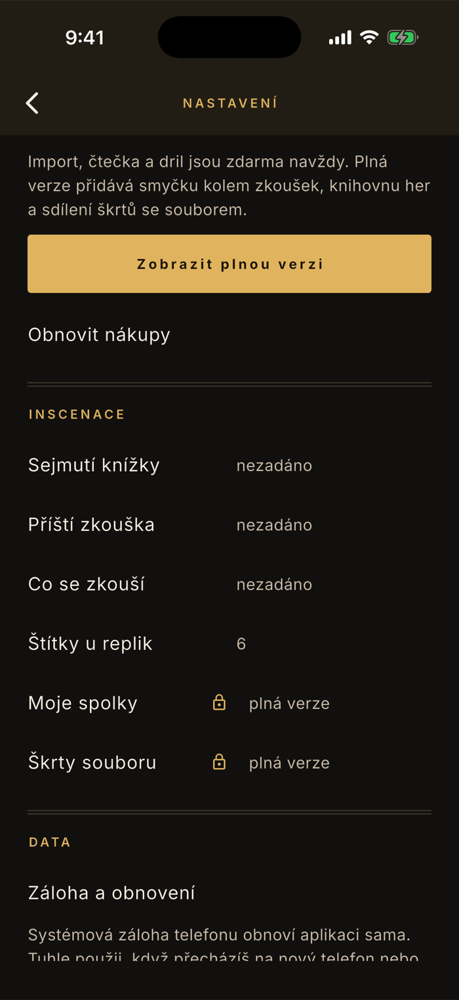
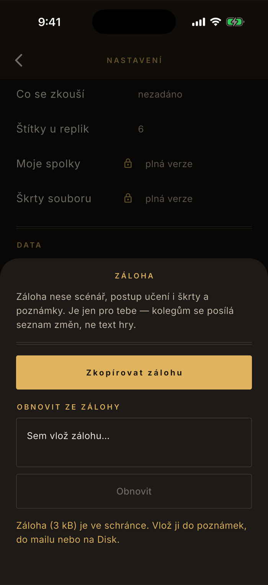

Data
Záloha a přenos na nový telefon
Šest týdnů poznámek ze zkoušek je práce, kterou nechcete udělat dvakrát. Nazkoušeno nemá účty ani cloud — všechno leží v telefonu, a to znamená, že kopie mimo něj vznikne jen tehdy, když si ji uděláte. Trvá to dvě ťuknutí.
Nejdřív dobrá zpráva: obvykle nemusíte nic
Systémová záloha telefonu obnoví aplikaci sama. Když přecházíte na nový iPhone přes zálohu v iCloudu, nebo na nový Android přes zálohu Googlu, přenese se Nazkoušeno i s hrou, postupem učení a škrty — stejně jako ostatní aplikace. Je to jediná cesta, kterou se text scénáře dostane mimo telefon: zálohu dělá systém, ne appka, ovládáte ji v nastavení telefonu a dá se vypnout. Nazkoušeno žádný server nemá a samo nikam nic neodesílá.
Ruční záloha je na tři situace: přecházíte mezi iPhonem a Androidem (systémová záloha mezi nimi nefunguje), starý telefon už nemáte, nebo si chcete text jen tak odložit stranou, než začnete v příští inscenaci.
Kde to najdeš
Nastavení, úplně dole, oddíl Data
Záloha není za zámkem. V nastavení ji poznáš podle toho, že u ní na rozdíl od Moje spolky a Škrty souboru žádný zámek není — a nebude, ať se ceník kdy změní jakkoli.
Ozubené kolo vpravo nahoře
Je na domovské obrazovce vedle knihovny her.
Sjeď dolů na Data
Je to poslední oddíl před informacemi o aplikaci.
Ťukni na Záloha a obnovení
Zespodu vyjede panel, ve kterém se zálohuje i obnovuje. Obojí je na jednom místě schválně — hledat obnovení ve chvíli, kdy máte v ruce nový telefon, není příjemné.

Postup
Záloha jde do schránky, ne do souboru
Ťuknutí na Zkopírovat zálohu vloží celou hru do schránky telefonu a řekne, kolik zabírá. Odtud ji musíš někam vložit — schránka se přepíše prvním dalším zkopírováním.
Ťukni na Zkopírovat zálohu
Objeví se věta „Záloha (… kB) je ve schránce." Celovečerní hra se vejde do sta kilobajtů, takže se pošle mailem bez potíží.
Hned ji někam vlož
Do poznámek, do mailu sobě, na Disk. Dokud ji nevložíš, žádná záloha neexistuje — je to jen obsah schránky.
Na novém telefonu obráceně
Zálohu zkopíruj odtamtud, kam jsi ji uložil, otevři stejný panel, vlož ji do pole Sem vlož zálohu… a ťukni na Obnovit. Hra se otevře, jako by ses od ní před chvílí zvedl.

Na co se ptají
Co všechno je v záloze
Text hry, obsazení a vaše ruční opravy z importu, postup učení včetně historie, škrty, poznámky u replik, štítky a karta role. Tedy všechno, co jste u té hry nasbírali.
Není v ní seznam vašich spolků, vlastní seznam štítků a zakoupená plná verze — ty patří k aplikaci, ne ke hře. Nákup se na novém telefonu vrátí tlačítkem Obnovit nákupy v nastavení, pod stejným účtem obchodu.
Mám rozdělané dvě hry naráz
Jedna záloha je jedna hra — ta, kterou máte právě otevřenou. Když jich máte víc, přepněte se v knihovně na druhou a zálohu udělejte znovu. Vzniknou dva texty, které si uložíte vedle sebe, a na novém telefonu je obnovíte jeden po druhém.
Kam zálohu uložit
Kamkoli, kde přežije výměnu telefonu — poznámky synchronizované na účet, mail sám sobě, cloudový disk. Aplikace sama nikam nic neposílá, tenhle krok děláte vy.
Právě proto stojí za rozmyšlenou, o jaký text jde: záloha obsahuje celou hru. U divadelního překladu nebo scénáře pod NDA zvažte, jestli chcete kopii na cizím serveru, a případně ji uložte do zařízení, ne do cloudu.
Co obnovení udělá s tím, co v aplikaci mám
Obnovená hra se přidá do knihovny a otevře. Pokud tam táž hra už je, přepíše se zálohou — je to obnovení, ne kopie, takže vám nevzniknou dvě verze téhož textu. Ostatních her se to nedotkne.
Svoji zálohu obnovíte vždycky, i v bezplatné verzi — přepis vlastní hry ani obnovení do prázdné knihovny nikam nenaráží. Cizí záloha, která by ve vaší knihovně byla druhou hrou, ale podléhá témuž pravidlu jako druhý import: je to funkce plné verze.
Aplikace říká „Tohle není záloha z Nazkoušeno."
Skoro vždycky je vložený text neúplný. Zálohu je potřeba vybrat celou, od první složené závorky po poslední — některé aplikace při dlouhém výběru uříznou konec. Zkuste to znovu a raději přes „Vybrat vše".
Druhá hláška, „Záloha je z novější verze aplikace.", znamená opak problému: záloha vznikla v novějším Nazkoušeno, než máte na tomhle telefonu. Aktualizujte aplikaci a obnovte znovu.
Můžu zálohu poslat kolegovi
Neposílejte. Záloha nese celý text hry, takže je určená jen vám a vašemu dalšímu telefonu. Na spolupráci se souborem slouží seznam změn, který nese jen čísla replik a typ změny, nikdy text — a je v plné verzi.
Proč přes schránku a ne přes soubor
Protože schránka funguje všude stejně, na iPhonu i na Androidu, a nepotřebuje k tomu žádné oprávnění navíc. Je to o třídu neohrabanější než uložit soubor a víme o tom; ukládání zálohy rovnou na Disk nebo do mailu přibude a postup na téhle stránce se tím zjednoduší.
Záloha je zdarma a zůstane
Nic, co chrání vaše data, se v Nazkoušeno nezpoplatňuje. Účtovat si za to, abyste nepřišli o vlastní práci, je věc, kterou tahle aplikace dělat nebude — stejně jako se neplatí za opravu toho, co při importu pokazil parser.
Nejde obnovit záloha, nebo si nejste jistí, jestli o něco přijdete?
contact@lukashula.cz